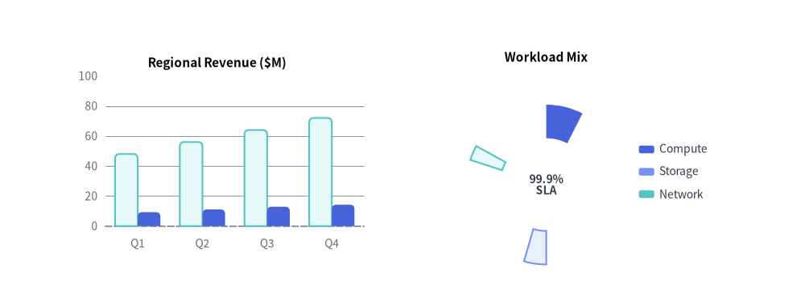
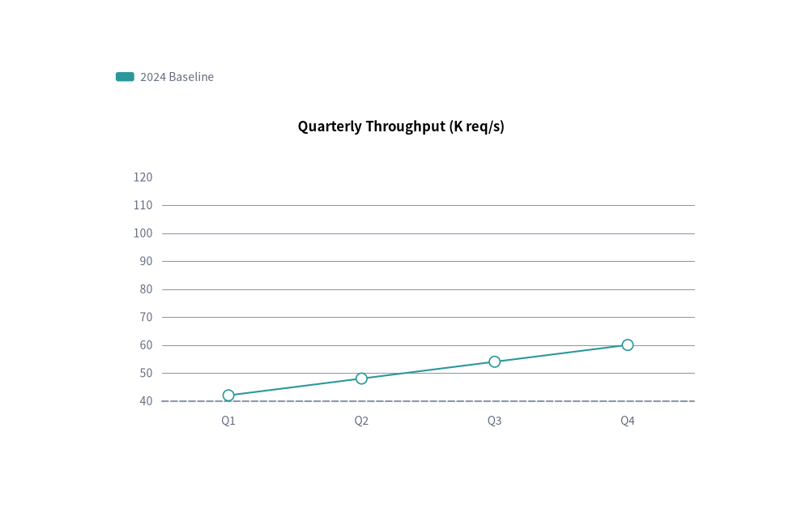
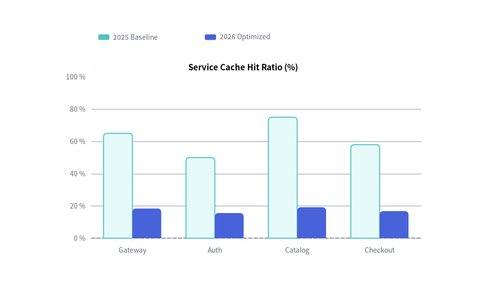
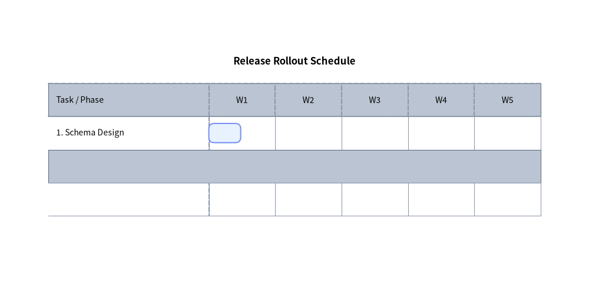

Charts のアニメーション
drawlib.charts に含まれる 7 つのチャートクラス（BarChart、LineChart、AreaChart、PieChart、RadarChart、ScatterChart、GanttChart）はすべて、**事前構築・フレーム内変更（Pre-Build & Mutate）**ライフサイクルに従います。

Source Code
from drawlib.anim import Animation
from drawlib.canvas import save, setup
from drawlib.charts.bar import BarChart
from drawlib.charts.pie import PieChart
from drawlib.styles import Styles
setup(width=126, height=48)
anim = Animation(fps=10.0)
bar = BarChart(
categories=["Q1", "Q2", "Q3", "Q4"],
axis_line_style=Styles.MutedDashed,
axis_text_style=Styles.Muted.patch(text_size=10.0),
grid_style=Styles.MutedThin,
width=52,
height=33,
title="Regional Revenue ($M)",
title_style=Styles.BlackBold.patch(text_size=11.0),
bar_r=0.7,
)
bar.configure_y_axis(min_value=0, max_value=100)
s_base = bar.add_series("2025", [48, 56, 64, 72], style=Styles.SecondaryNeutral)
s_curr = bar.add_series("2026", [62, 74, 86, 95], style=Styles.PrimaryFlat)
pie = PieChart(
radius=12.5,
hole_ratio=0.58,
center_text="99.9%\nSLA",
center_text_style=Styles.DarkBold.patch(text_size=10.0),
title="Workload Mix",
title_style=Styles.BlackBold.patch(text_size=11.0),
)
sl1 = pie.add_slice("Compute", 50.0, style=Styles.PrimaryFlat)
sl2 = pie.add_slice("Storage", 30.0, style=Styles.PrimaryNeutral)
sl3 = pie.add_slice("Network", 20.0, style=Styles.SecondaryNeutral)
slices = [sl1, sl2, sl3]
for r in [0.15, 0.35, 0.55, 0.80, 1.0]:
s_curr.draw_ratio = r
for sl in slices:
sl.draw_ratio = r
is_last = (r == 1.0)
with anim.frame(duration=2.2 if is_last else 0.12):
bar.draw(xy=(8.0, 7.5))
pie.draw(xy=(69.0, 2.5))
pie.draw_legend(xy=(100.0, 24.5), text_style=Styles.Dark.patch(text_size=10.0))
save()
- ループの外側でチャートをインスタンス化し、すべての系列・スライス・タスクを一度だけ登録します（
s = chart.add_series(...)、sl = chart.add_slice(...)、t = chart.add_task(...)）。 with anim.frame():の内部で.show、.draw_ratio（0.0〜1.0）、または.draw_direction（"bottom_to_top"または"left_to_right"）を変更し、chart.draw(xy=..., scale=1.0)を呼び出します。
1. 系列の段階的表示 (s.show)
Drawlib は**show=False の有無にかかわらず登録済みの全要素を対象として**軸の自動範囲（min_value、max_value、tick_step）、円グラフの比率、ガントチャートの行高を計算するため、フレームごとに s.show = True を切り替えてもチャートの軸がずれたり再スケーリングされたりすることなく、系列を 1 つずつ順に表示できます。
from drawlib.anim import Animation
from drawlib.canvas import save, setup
from drawlib.charts.line import LineChart
from drawlib.styles import Styles
setup(width=105, height=66)
anim = Animation(fps=1.2)
chart = LineChart(
categories=["Q1", "Q2", "Q3", "Q4"],
axis_line_style=Styles.MutedDashed,
axis_text_style=Styles.Muted.patch(text_size=10.0),
grid_style=Styles.MutedThin,
width=82,
height=44,
title="Quarterly Throughput (K req/s)",
title_style=Styles.BlackBold.patch(text_size=12.0),
smooth=True,
)
s1 = chart.add_series("2024 Baseline", [42, 48, 54, 60], style=Styles.Secondary, line_style="dashed")
s2 = chart.add_series("2025 Target", [50, 65, 78, 92], style=Styles.Accent)
s3 = chart.add_series("2026 Actual", [55, 76, 94, 115], style=Styles.Primary, line_width=2.5)
series_list = [s1, s2, s3]
for step in range(len(series_list)):
for i, s in enumerate(series_list):
s.show = (i <= step)
is_last = (step == len(series_list) - 1)
with anim.frame(duration=2.5 if is_last else 0.9):
chart.draw(xy=(11, 8))
chart.draw_legend(xy=(15, 56), text_style=Styles.Muted.patch(text_size=10.0), orientation="horizontal")
save()

2. 部分的な空間伸長 (s.draw_ratio と s.draw_direction)
すべての Series、Slice、Task は、draw_ratio: float（0.0〜1.0）および draw_direction: DrawDirection（"bottom_to_top" または "left_to_right"）による部分的な空間描画を標準サポートしています。
BarChart:"bottom_to_top"（デフォルト） はベースラインからすべての棒を垂直方向に伸ばし、"left_to_right"はカテゴリごとに左から順に表示します。LineChart/AreaChart:"left_to_right"（デフォルト） は曲線を左から右へ連続的にスイープし、"bottom_to_top"はベースラインから垂直方向に立ち上げます。ScatterChart:"left_to_right"（デフォルト） は X 軸の範囲に沿って系列の点をスイープし（x <= x_min + (x_max - x_min) * r）、"bottom_to_top"はマーカーのradiusをr倍にスケーリングしながら下端の軸から目標のyへ向かって上昇させます。また、pt = chart.add(x, y, ...)で登録した個別の単独ポイントもpt.show: boolとpt.style: Styleを公開しています。PieChart:"left_to_right"（デフォルト） は扇形を角度方向にスイープし、"bottom_to_top"は中心から外側へ放射状に拡大します。RadarChart:"bottom_to_top"（デフォルト） は中心から多角形を放射状に拡大し、"left_to_right"はスポーク（軸）ごとに順にスイープします。GanttChart:"left_to_right"（デフォルト） はタスクバーをstartからendに向かって水平に伸ばし、"bottom_to_top"は下端から垂直方向に伸ばします。
from drawlib.anim import Animation
from drawlib.canvas import save, setup
from drawlib.charts.bar import BarChart
from drawlib.styles import Styles
setup(width=105, height=64)
anim = Animation(fps=10.0)
chart = BarChart(
categories=["Gateway", "Auth", "Catalog", "Checkout"],
axis_line_style=Styles.MutedDashed,
axis_text_style=Styles.Muted.patch(text_size=10.0),
grid_style=Styles.MutedThin,
width=82,
height=44,
title="Service Cache Hit Ratio (%)",
title_style=Styles.BlackBold.patch(text_size=12.0),
bar_r=0.8,
)
chart.configure_y_axis(min_value=0, max_value=100, unit="%")
s1 = chart.add_series("2025 Baseline", [65, 50, 75, 58], style=Styles.SecondaryNeutral)
s2 = chart.add_series("2026 Optimized", [92, 78, 96, 84], style=Styles.PrimaryFlat)
for r in [0.2, 0.4, 0.6, 0.8, 1.0]:
s2.draw_ratio = r
is_last = (r == 1.0)
with anim.frame(duration=2.2 if is_last else 0.12):
chart.draw(xy=(11, 8))
chart.draw_legend(xy=(21, 56), text_style=Styles.Muted.patch(text_size=10.0), orientation="horizontal")
save()

3. プロジェクトスケジュールの段階的表示 (GanttChart)
GanttChart では、すべての要素登録メソッドがミュータブルなモデルオブジェクトを返します。
Task(gantt.add_task(...)):.show、.style、.text_style、.draw_ratio、.draw_direction（"left_to_right"または"bottom_to_top"）。Taskを非表示（task.show = False）にすると、from_taskまたはto_taskとして接続されているDependency矢印も自動的に非表示になります。Section(gantt.add_section(...)):.show、.style、.text_style。Milestone(gantt.add_milestone(...)):.show、.style、.text_style。Marker(gantt.add_marker(...)):.show、.style、.text_style。Dependency(gantt.add_dependency(...)):.show、.style。
task.show と task.draw_ratio を変更することで、すべての行レーンと列ヘッダーを固定したまま、タイムラインに沿ってタスクバーを段階的に表示・伸長できます。
from drawlib.anim import Animation
from drawlib.canvas import save, setup
from drawlib.charts.gantt import GanttChart
from drawlib.styles import Styles
setup(width=110, height=54)
anim = Animation(fps=8.0)
gantt = GanttChart(
columns=["W1", "W2", "W3", "W4", "W5"],
axis_line_style=Styles.MutedDashed,
axis_text_style=Styles.Black.patch(text_size=10.0),
grid_style=Styles.MutedThin,
header_style=Styles.MutedThin,
zebra_style=Styles.MutedThin,
width=96.0,
label_width=30.0,
header_height=6.2,
row_height=6.2,
title="Release Rollout Schedule",
title_style=Styles.BlackBold.patch(text_size=12.0),
bar_radius=1.0,
)
t1 = gantt.add_task("1. Schema Design", start="W1", end=1.2, style=Styles.PrimaryNeutral)
t2 = gantt.add_task("2. Core Engine", start="W2", end=3.2, style=Styles.PrimaryFlat, show=False)
t3 = gantt.add_task("3. Production GA", start="W4", end=4.8, style=Styles.SecondaryNeutral, show=False)
tasks = [t1, t2, t3]
for idx, active_task in enumerate(tasks):
active_task.show = True
for r in [0.4, 0.8, 1.0]:
active_task.draw_ratio = r
is_final = (idx == len(tasks) - 1 and r == 1.0)
with anim.frame(duration=2.5 if is_final else 0.14):
gantt.draw(xy=(7, 7))
save()

4. 空間寸法の一時上書きと比例スケーリング (draw と draw_legend)
すべてのチャートの draw() および draw_legend() メソッドは、空間寸法の一時的な上書き引数と、xy をアンカーとする均一な比例倍率 scale: float = 1.0 を受け付けます。
- 直交座標チャートおよびガントチャート (
BarChart,LineChart,AreaChart,ScatterChart,GanttChart):chart.draw(xy=(x, y), *, width=None, height=None, scale=1.0) - 放射状チャート (
PieChart,RadarChart):chart.draw(xy=(x, y), *, radius=None, width=None, height=None, scale=1.0) - 単独の凡例:
chart.draw_legend(xy=(x, y), text_style=..., orientation="vertical"|"horizontal", swatch_width=2.4, swatch_height=1.2, item_gap=4.0, *, scale=1.0)
scale != 1.0 を指定すると、元のチャート設定を変更することなく、チャート全体のコンテナ・軸線・棒や曲線・マーカー・タイポグラフィを比例スケーリングして描画できます。